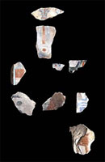

|
Developing the Collection
Page
3 of 5
New
acquisitions significantly enhance our understanding of objects already
in the collection and of ancient Egyptian culture.
The
collection of the Department of Ancient Egypt and the Sudan amounts to
over 110,000 objects. Most pieces entered the collection through two principal
routes: private collectors in the 19th century, and early 20th century
excavations. The collection continues to grow, however, principally through
the division of finds courtesy of the Sudanese government, and the purchase
of objects from old private collections. The Museum adheres to the UNESCO
treaty of 1970, and will not consider objects that left Egypt after that
date. New acquisitions can significantly enhance our understanding of
other artefacts in the collection, and can also increase its breadth and
coverage of ancient Egyptian culture.
The
following objects exhibit the range of objects and their different histories.
 Coffin of Nesmut
Coffin of Nesmut
Statue of the Vizier Khenmes
Fragments
of Wall Reliefs
|
Coffin
of Nesmut
The
base of this early 25th dynasty coffin
from Thebes bears a representation of the sky-goddess Nut, with
arms outstretched to embrace the mummy. This piece was part of a
group of coffins and mummies presented to the Prince of Wales by
the Egyptian Government in 1869. It had been on display in Dunrobin
Castle since 1878, but now rejoins several other coffins from the
group in the British Museum, including a coffin of Nesmut's daughter
(?), Bakenrenes.
The purchase of this coffin was made possible through the generosity
of the Friends of the British Museum (EA 75193)
|
|
Statue
of the Vizier Khenmes
|
|
|
This 13th dynasty statue has been known for
over a century, but was privately owned until its acquisition by
the British Museum in 2000. The historically important inscription
states that the statue was actually presented as a favour by one
of two little-known kings called Sekhemkare.
The purchase of this statue was made possible through the generosity
of the Friends of the British Museum (EA 75196).
|
Fragments
of Wall Reliefs
|

EA
74305-6, 74309-15
|
These
early 12th dynasty relief fragments were excavated in Thebes and
Lisht by the Metropolitan Museum of Art (New York) between 1909
and 1923. They were later deaccessioned from its collection but
have now been purchased by the British Museum in consultation with
the Metropolitan Museum. These fragmentary remains attest the high
artistic standards of royal monuments, re-established after the
First Intermediate Period.
|
Pages 1
| 2 | 3 | 4
| 5 |
|